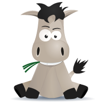

My formation
IT
- 2024 : EPSI -- IS and IT expert -- SAP consultant
- 2021 - 2023 : Studi -- Bachelor application developper Java
- 2021 : OpenClassrooms -- Web developer full-stack
Je passe par curiosité un concours pour rentrer dans la police scientifique que je réussi. Je décide d'arrêter ma licence pour me consacrer entièrement à mon nouveau travail. Durant mes enquêtes, je me passionne pour la spécialité informatique de technicien PTS, et décide de commencer une formation de développeur web en parallèle de mon travail.
Biology
- 2018 - 2020 : Bachelor degree in ecology and organisms' biology in Montpellier university
- 2017 - 2018 : Bachelor degree in biochimistry, molecular and cellular biology and genetic in Limoges university
- 2015 - 2018 : Veterinary assistant's formation with CEF
- 2015 - 2018 : Pet shop seller's formation with CEF
Partager entre mon amour de la biologie et de l'informatique je m'engage d'abord sur la voie des études vétérinaires avant de me spécialiser en écologie. Je trouve un grand intérêt à la biologie des organismes ainsi qu'à l'évolution et la génétique. Je continue à développer ma passion du développement grâce au langage R et à l'algorithmique.
Others
- 2013 - 2016 : High school diploma in sciences with distinction
- 2006 - French Red Cross: Secourism certifications
Passionnée d'informatique je commence à apprendre le HTML, CSS et le PHP sur le Site du Zéro
Je décide de faire des études générales scientifiques